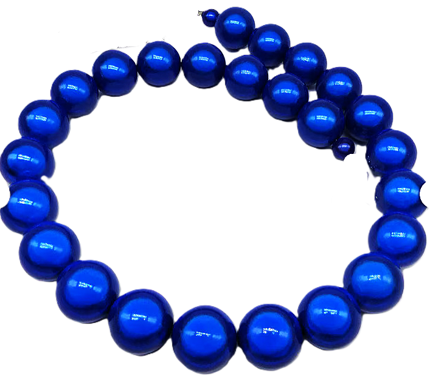

This page was last modified EST.

The entire family was baffled by the mystery of Aunt Nell's blue beads. Years before, when they were first married, her husband had given her some beautiful blue beads. They were not expensive, but were highly treasured. The center bead was larger and more beautiful than the others. Somewhere Aunt Nell had lost them and she was grieved. She simply couldn't find them
Mother had often said, "We've searched every place in the house. Too, as we worked in the garden, orchard, or animal pens we have all looked."
Father, too, insisted he had examined every possible place outside. "I've even looked in the hens' nests," he laughed.

(hens' nest)